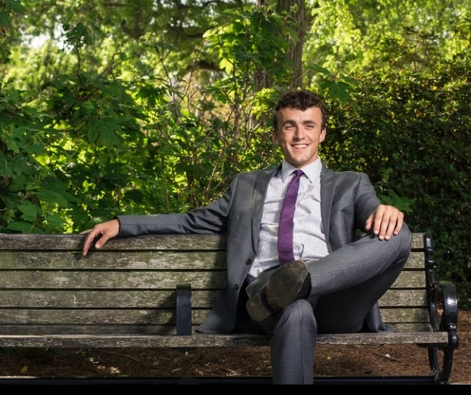

Shane Woodruff

ME
Hi, my name is Shane Woodruff and I am currently a third year Computer Science student at the Georgia Institute of Technology in Atlanta. I started college as a chemical engineering student but soon became infatuated with computers after taking a few computer science courses. My friend once asked me “Why do you like computer science?" and I found myself unable to give an answer. However, from that moment on, I tried to understand what makes computer science so attractive for me. For me the ability to have so much power at your fingertips is highly enticing and the everyday challenge of solving complex problems keeps the mind sharp. I will continue to pursue my passion and follow a career in this field.
In my free time I enjoy playing soccer, hiking, camping, biking, and having fun with friends. I have camped across the United States and love long road trips to the west. My favorite place to camp is in the Rocky Mountains, particularly Colorado. I also enjoy volunteering at various organizations and have been doing so since I was a little boy.
RESUME